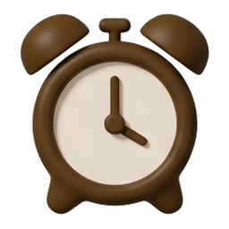
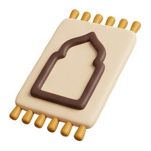
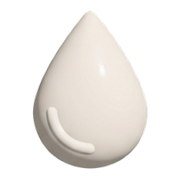
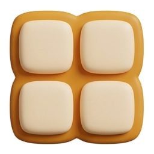
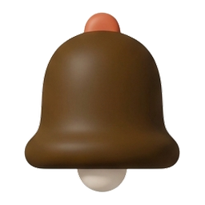

9:41
Bomdod uyg'otgichi

05:36
Ertaga · Bomdod vaqtida
Qanday o'chiriladi

Joynamozni skanerlash
Karavotdan turishni talab qiladi

Rakovinani skanerlash
Hammomga borish kerak

Oddiy tugma
Tavsiya etilmaydi
Ovoz

Ohang
Asta-sekin kuchayadi
Azon
Tebranish
Takroriy signal
5 daqiqada bir
Signal aniq vaqtda ishlashi uchun batareya optimallashtirishini o'chiring.